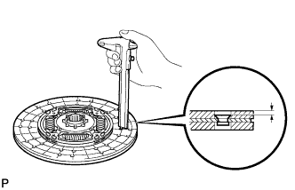
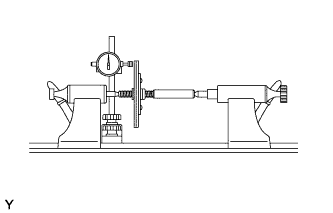
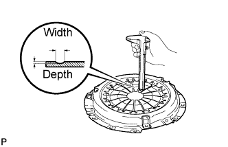
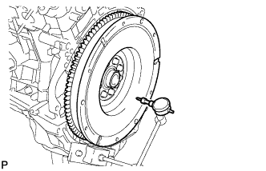
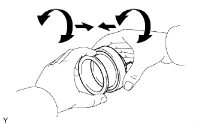
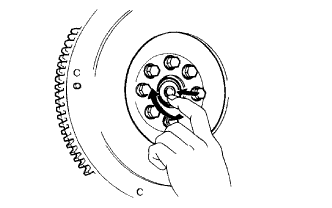
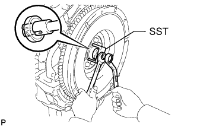
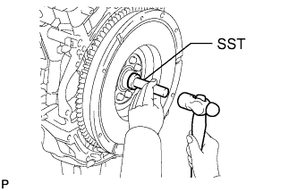

CLUTCH UNIT (for 1GR-FE) > INSPECTION |
| 1. INSPECT CLUTCH DISC ASSEMBLY |
 |
Using a vernier caliper, measure the rivet depth.
 |
Using a dial indicator with a roller instrument, check the clutch disc runout.
| 2. INSPECT CLUTCH COVER ASSEMBLY |
 |
Using a vernier caliper, inspect the depth and width of wear of the diaphragm spring.
| Depth | Width |
| 0.6 mm (0.0236 in.) | 5.0 mm (0.197 in.) |
| 3. INSPECT FLYWHEEL SUB-ASSEMBLY |
 |
Using a dial indicator, inspect the flywheel runout.
| 4. INSPECT CLUTCH RELEASE BEARING ASSEMBLY |
 |
Check that the clutch release bearing moves smoothly without abnormal resistance by turning the sliding parts of the clutch release bearing (contact surfaces with the clutch cover) while applying force in the axial direction.
Inspect the clutch release bearing for damage or wear.
Replace the release bearing assembly as necessary.
| 5. INSPECT INPUT SHAFT BEARING |
 |
Turn the bearing by hand while applying force in the direction of the rotation.
If the bearing is stuck or difficult to turn, replace the input shaft bearing.
| 6. REPLACE INPUT SHAFT BEARING |
 |
Using SST, remove the bearing.
 |
Using SST and a hammer, install a new bearing.